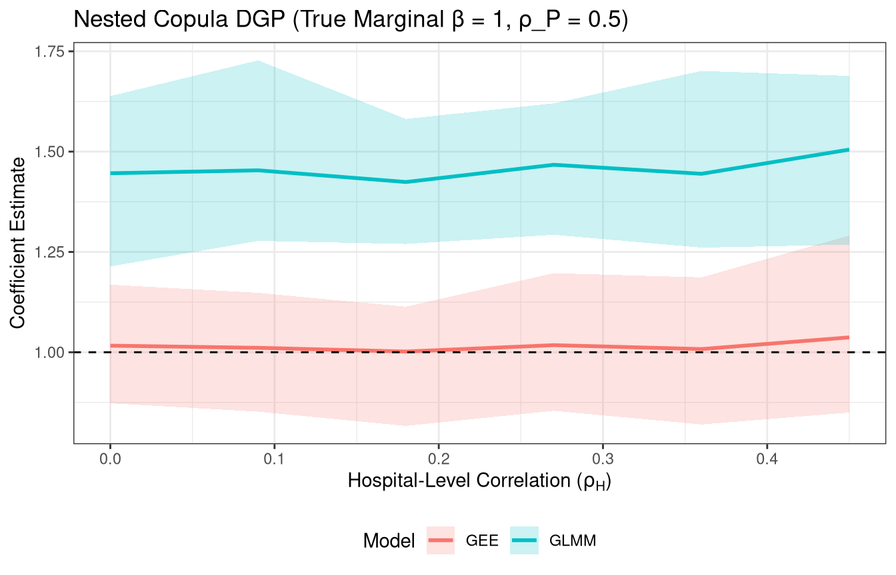
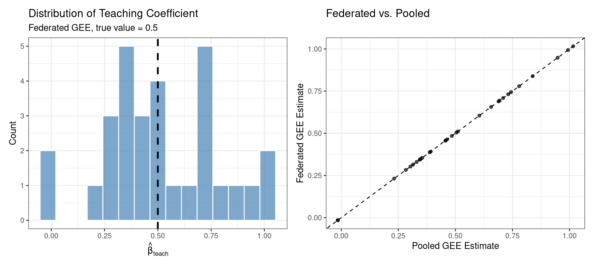
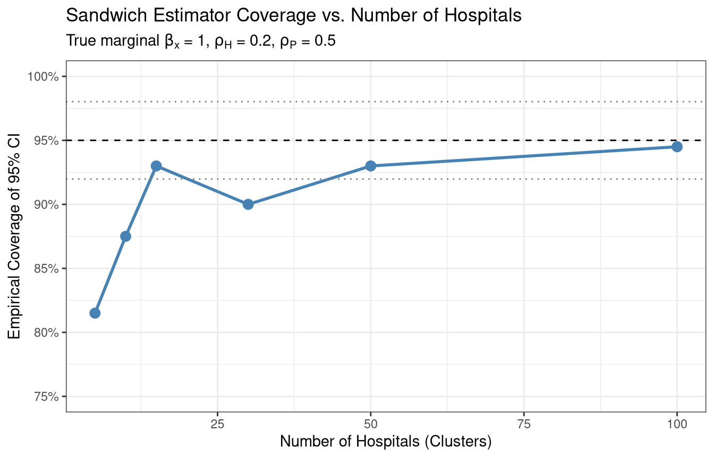

Load libraries
library(lme4)
library(geepack)
library(dplyr)
library(tidyr)
library(ggplot2)
library(mvtnorm)
library(patchwork)
set.seed(2026)AUD Medication Prescribing Across VA Hospitals
library(lme4)
library(geepack)
library(dplyr)
library(tidyr)
library(ggplot2)
library(mvtnorm)
library(patchwork)
set.seed(2026)The data-generating process must produce correlated binary outcomes while preserving exact marginal probabilities. We use a nested latent normal (copula) construction that induces correlation at both the hospital and patient levels without distorting the marginal model.
For patient \(i\) at hospital \(h\), visit \(j\), the latent variable is:
\[ Z_{hij} = \sqrt{\rho_H}\; U_h + \sqrt{\rho_P - \rho_H}\; W_{hi} + \sqrt{1 - \rho_P}\; \epsilon_{hij} \]
where \(U_h \sim N(0,1)\) is shared across hospital \(h\), \(W_{hi} \sim N(0,1)\) is shared across patient \(i\)’s visits, and \(\epsilon_{hij} \sim N(0,1)\) is visit-level noise. All components are independent.
Since the variance sums to 1, each \(Z_{hij} \sim N(0,1)\) marginally. Setting \(Y_{hij} = \mathbf{1}(Z_{hij} < \Phi^{-1}(p_{hij}))\) where \(p_{hij} = \text{logit}^{-1}(\mathbf{x}_{hij}'\boldsymbol{\beta})\) guarantees that \(P(Y_{hij}=1) = p_{hij}\) exactly.
The correlation structure is:
The constraint \(\rho_P \geq \rho_H \geq 0\) must hold.
generate_data <- function(rho_H, rho_P, n_hospitals = 15,
n_patients_per_hosp = 15,
beta = c(-1, 1),
include_teaching = FALSE,
beta_teach = 0.5) {
stopifnot(rho_P >= rho_H, rho_H >= 0, rho_P <= 1)
# Hospital-level latent draw
U <- rnorm(n_hospitals)
# Hospital-level covariate (half are teaching hospitals)
teaching <- rep(0L, n_hospitals)
if (include_teaching) {
teaching[sample(1:n_hospitals, floor(n_hospitals / 2))] <- 1L
}
patients <- data.frame(
hosp_id = rep(1:n_hospitals, each = n_patients_per_hosp),
pat_id = 1:(n_hospitals * n_patients_per_hosp)
)
visits_list <- lapply(patients$pat_id, function(p) {
h <- patients$hosp_id[patients$pat_id == p]
n_vis <- sample(2:6, 1)
x <- rnorm(n_vis)
# Marginal linear predictor
eta <- beta[1] + beta[2] * x
if (include_teaching) eta <- eta + beta_teach * teaching[h]
prob_marg <- plogis(eta)
# Nested latent normal
W <- rnorm(1)
eps <- rnorm(n_vis)
Z <- sqrt(rho_H) * U[h] +
sqrt(rho_P - rho_H) * W +
sqrt(1 - rho_P) * eps
y <- as.integer(Z < qnorm(prob_marg))
data.frame(hosp_id = h,
pat_id = paste0(h, "_", p),
teaching = teaching[h],
x = x, y = y)
})
bind_rows(visits_list) |> arrange(hosp_id, pat_id)
}The federated GEE uses independence working correlation with a sandwich variance estimator clustered at the hospital (site) level. The protocol is iterative Fisher scoring:
No patient-level data ever leaves a site. Only the \(p \times p\) matrices \(B_k\), \(M_k\) and the \(p \times 1\) vector \(\mathbf{S}_k\) are transmitted.
# ------------------------------------------------------------------
# Site-level computation: what each hospital computes and transmits
# ------------------------------------------------------------------
site_contribute <- function(site_data, beta, x_vars) {
X <- cbind(Intercept = 1, as.matrix(site_data[, x_vars, drop = FALSE]))
y <- site_data$y
eta <- as.numeric(X %*% beta)
mu <- plogis(eta)
w <- mu * (1 - mu)
resid <- y - mu
# Bread contribution: X'WX
B_k <- crossprod(X * w, X)
# Score contribution: X'(Y - mu)
S_k <- crossprod(X, resid)
# Meat contribution: S_k S_k' (cluster-level outer product)
M_k <- tcrossprod(S_k)
list(B = B_k, S = S_k, M = M_k)
}
# ------------------------------------------------------------------
# Coordinating center: aggregates site contributions and updates
# ------------------------------------------------------------------
federated_gee <- function(data, x_vars, max_iter = 50, tol = 1e-10) {
sites <- split(data, data$hosp_id)
p <- 1 + length(x_vars) # intercept + covariates
beta <- rep(0, p)
names(beta) <- c("(Intercept)", x_vars)
# Iterative Fisher scoring
for (iter in 1:max_iter) {
contribs <- lapply(sites, site_contribute, beta = beta, x_vars = x_vars)
B_total <- Reduce("+", lapply(contribs, `[[`, "B"))
S_total <- Reduce("+", lapply(contribs, `[[`, "S"))
delta <- solve(B_total, S_total)
beta <- beta + as.numeric(delta)
if (max(abs(delta)) < tol) break
}
# Final sandwich computation at converged beta
contribs <- lapply(sites, site_contribute, beta = beta, x_vars = x_vars)
B_total <- Reduce("+", lapply(contribs, `[[`, "B"))
M_total <- Reduce("+", lapply(contribs, `[[`, "M"))
B_inv <- solve(B_total)
V <- B_inv %*% M_total %*% B_inv
list(
coefficients = beta,
se = sqrt(diag(V)),
vcov = V,
bread = B_total,
meat = M_total,
iterations = iter
)
}The first simulation establishes that the federated protocol produces results numerically identical to fitting GEE on the pooled data. This is not an approximation—the estimating equations decompose exactly.
d <- generate_data(rho_H = 0.2, rho_P = 0.5, n_hospitals = 20)
# Federated
fed_fit <- federated_gee(d, x_vars = "x")
# Pooled (geeglm with independence working correlation, hospital clustering)
pooled_fit <- geeglm(y ~ x, id = hosp_id, data = d,
family = binomial, corstr = "independence")
# Compare coefficients
comparison <- data.frame(
Parameter = names(fed_fit$coefficients),
Federated = fed_fit$coefficients,
Pooled = coef(pooled_fit),
Difference = fed_fit$coefficients - coef(pooled_fit),
Fed_SE = fed_fit$se,
Pooled_SE = sqrt(diag(vcov(pooled_fit))),
SE_Difference = fed_fit$se - sqrt(diag(vcov(pooled_fit)))
)
rownames(comparison) <- NULL
knitr::kable(comparison, digits = 12,
caption = "Federated vs. pooled GEE: single dataset comparison")| Parameter | Federated | Pooled | Difference | Fed_SE | Pooled_SE | SE_Difference |
|---|---|---|---|---|---|---|
| (Intercept) | -0.7807571 | -0.7807571 | 0 | 0.167184 | 0.167184 | 0 |
| x | 1.0533002 | 1.0533002 | 0 | 0.102664 | 0.102664 | 0 |
settings <- expand.grid(rho_H = c(0, 0.1, 0.3), rho_P = c(0.2, 0.5, 0.8))
settings <- settings[settings$rho_P >= settings$rho_H, ]
equiv_results <- lapply(1:nrow(settings), function(i) {
d <- generate_data(rho_H = settings$rho_H[i], rho_P = settings$rho_P[i],
n_hospitals = 10)
fed <- federated_gee(d, x_vars = "x")
pool <- geeglm(y ~ x, id = hosp_id, data = d,
family = binomial, corstr = "independence")
data.frame(
rho_H = settings$rho_H[i],
rho_P = settings$rho_P[i],
max_beta_diff = max(abs(fed$coefficients - coef(pool))),
max_se_diff = max(abs(fed$se - sqrt(diag(vcov(pool)))))
)
}) |> bind_rows()
knitr::kable(equiv_results, digits = 3,
caption = "Maximum absolute difference in coefficients and SEs across settings",
col.names = c("$\\rho_H$", "$\\rho_P$",
"Max $|\\Delta\\hat{\\beta}|$",
"Max $|\\Delta \\text{SE}|$"),
escape = FALSE)| \(\rho_H\) | \(\rho_P\) | Max \(|\Delta\hat{\beta}|\) | Max \(|\Delta \text{SE}|\) |
|---|---|---|---|
| 0.0 | 0.2 | 0 | 0 |
| 0.1 | 0.2 | 0 | 0 |
| 0.0 | 0.5 | 0 | 0 |
| 0.1 | 0.5 | 0 | 0 |
| 0.3 | 0.5 | 0 | 0 |
| 0.0 | 0.8 | 0 | 0 |
| 0.1 | 0.8 | 0 | 0 |
| 0.3 | 0.8 | 0 | 0 |
The differences should be at machine precision (\(\sim 10^{-12}\) or smaller). This is exact decomposition, not approximation.
This simulation uses the nested copula DGP where the true marginal \(\beta_1 = 1\). We fix \(\rho_P = 0.5\) and sweep \(\rho_H\) from 0 to 0.45 to show how increasing hospital-level heterogeneity affects the GLMM vs. GEE divergence.
n_sims <- 30 # Increase for smoother bands
rho_H_seq <- seq(0, 0.45, by = 0.09)
rho_P_fixed <- 0.5
res_sim2 <- list()
for (rH in rho_H_seq) {
for (i in 1:n_sims) {
d <- generate_data(rho_H = rH, rho_P = rho_P_fixed, n_hospitals = 20)
# Federated GEE
fed <- federated_gee(d, x_vars = "x")
beta_gee <- fed$coefficients["x"]
# GLMM
beta_glmm <- tryCatch({
mod <- glmer(y ~ x + (1 | hosp_id) + (1 | pat_id),
data = d, family = binomial, nAGQ = 1)
fixef(mod)["x"]
}, error = function(e) NA)
res_sim2[[length(res_sim2) + 1]] <- data.frame(
rho_H = rH, sim = i, GEE = beta_gee, GLMM = beta_glmm
)
}
}
df_sim2 <- bind_rows(res_sim2) |> drop_na() |>
pivot_longer(c(GEE, GLMM), names_to = "Model", values_to = "Est") |>
group_by(rho_H, Model) |>
summarise(mean = mean(Est),
lwr = quantile(Est, 0.025),
upr = quantile(Est, 0.975), .groups = "drop")ggplot(df_sim2, aes(x = rho_H, y = mean, color = Model, fill = Model)) +
geom_line(linewidth = 1) +
geom_ribbon(aes(ymin = lwr, ymax = upr), alpha = 0.2, color = NA) +
geom_hline(yintercept = 1, linetype = "dashed") +
labs(title = "Nested Copula DGP (True Marginal β = 1, ρ_P = 0.5)",
x = bquote("Hospital-Level Correlation (" * rho[H] * ")"),
y = "Coefficient Estimate") +
theme_bw() +
theme(legend.position = "bottom")
The GEE line stays flat at 1 because the marginal model is correct by construction. The GLMM is estimating the conditional effect, which must be larger than the marginal effect for logistic models—and the gap grows with \(\rho_H\) because greater hospital-level heterogeneity means more attenuation when marginalizing.
A hospital-level covariate (e.g., teaching status) is constant within each site. This makes the local design matrix rank-deficient—the teaching column is collinear with the intercept at every site. We demonstrate that federated GEE still recovers the coefficient because \(B_k\) is summed before inversion, not inverted locally.
The true DGP uses \(\beta_0 = -1\), \(\beta_x = 1\), \(\beta_\text{teach} = 0.5\).
n_sims <- 30
res_sim3 <- list()
for (i in 1:n_sims) {
d <- generate_data(rho_H = 0.2, rho_P = 0.5, n_hospitals = 30,
include_teaching = TRUE, beta_teach = 0.5)
# Federated GEE with both x and teaching
fed <- federated_gee(d, x_vars = c("x", "teaching"))
# Pooled GEE for verification
pool <- geeglm(y ~ x + teaching, id = hosp_id, data = d,
family = binomial, corstr = "independence")
res_sim3[[i]] <- data.frame(
sim = i,
fed_x = fed$coefficients["x"],
fed_teach = fed$coefficients["teaching"],
fed_se_teach = fed$se[3],
pool_x = coef(pool)["x"],
pool_teach = coef(pool)["teaching"],
pool_se_teach = sqrt(vcov(pool)["teaching", "teaching"]),
# Check local rank deficiency
n_teaching_hospitals = sum(tapply(d$teaching, d$hosp_id, unique))
)
}
df_sim3 <- bind_rows(res_sim3)p3a <- ggplot(df_sim3, aes(x = fed_teach)) +
geom_histogram(bins = 15, fill = "steelblue", alpha = 0.7, color = "white") +
geom_vline(xintercept = 0.5, linetype = "dashed", linewidth = 1) +
labs(title = "Distribution of Teaching Coefficient",
subtitle = "Federated GEE, true value = 0.5",
x = bquote(hat(beta)[teach]), y = "Count") +
theme_bw()
p3b <- ggplot(df_sim3, aes(x = pool_teach, y = fed_teach)) +
geom_point(alpha = 0.7) +
geom_abline(slope = 1, intercept = 0, linetype = "dashed") +
labs(title = "Federated vs. Pooled",
x = "Pooled GEE Estimate", y = "Federated GEE Estimate") +
theme_bw()
p3a + p3b
cat("Teaching coefficient across", n_sims, "simulations:\n")Teaching coefficient across 30 simulations:cat(" Mean estimate:", round(mean(df_sim3$fed_teach), 3), "\n") Mean estimate: 0.518 cat(" True value: 0.500\n") True value: 0.500cat(" Mean SE: ", round(mean(df_sim3$fed_se_teach), 3), "\n") Mean SE: 0.301 cat(" Empirical SD: ", round(sd(df_sim3$fed_teach), 3), "\n") Empirical SD: 0.263 cat(" Max |fed - pooled| difference:",
formatC(max(abs(df_sim3$fed_teach - df_sim3$pool_teach)), format = "e", digits = 3), "\n") Max |fed - pooled| difference: 3.331e-16 The key point: every site’s \(B_k\) is singular (teaching column is proportional to the intercept column locally), but the sum \(B = \sum_k B_k\) is full rank because different sites have different values of teaching. The same logic applies to any hospital-level covariate: bed count, region, academic affiliation.
The sandwich variance estimator is consistent as the number of independent clusters grows. With few hospitals, it can underestimate variance, leading to undercoverage of confidence intervals. This simulation varies the number of hospitals and checks empirical coverage of nominal 95% Wald intervals.
n_sims <- 200 # Need more sims for stable coverage estimates
n_hosp_seq <- c(5, 10, 15, 30, 50, 100)
res_sim4 <- list()
for (K in n_hosp_seq) {
for (i in 1:n_sims) {
d <- generate_data(rho_H = 0.2, rho_P = 0.5, n_hospitals = K)
fed <- tryCatch({
federated_gee(d, x_vars = "x")
}, error = function(e) NULL)
if (is.null(fed)) next
beta_hat <- fed$coefficients["x"]
se_hat <- fed$se[2] # SE for x
# 95% Wald CI
ci_lwr <- beta_hat - 1.96 * se_hat
ci_upr <- beta_hat + 1.96 * se_hat
covers <- (ci_lwr <= 1) & (1 <= ci_upr)
res_sim4[[length(res_sim4) + 1]] <- data.frame(
n_hospitals = K, sim = i,
beta_hat = beta_hat, se_hat = se_hat,
covers = covers
)
}
}
df_sim4 <- bind_rows(res_sim4) |>
group_by(n_hospitals) |>
summarise(
coverage = mean(covers),
mean_se = mean(se_hat),
empirical_sd = sd(beta_hat),
se_ratio = mean(se_hat) / sd(beta_hat),
n_converged = n(),
.groups = "drop"
)ggplot(df_sim4, aes(x = n_hospitals, y = coverage)) +
geom_line(linewidth = 1, color = "steelblue") +
geom_point(size = 3, color = "steelblue") +
geom_hline(yintercept = 0.95, linetype = "dashed") +
geom_hline(yintercept = 0.95 - 1.96 * sqrt(0.95 * 0.05 / n_sims),
linetype = "dotted", color = "grey50") +
geom_hline(yintercept = 0.95 + 1.96 * sqrt(0.95 * 0.05 / n_sims),
linetype = "dotted", color = "grey50") +
scale_y_continuous(limits = c(0.75, 1), labels = scales::percent) +
labs(title = "Sandwich Estimator Coverage vs. Number of Hospitals",
subtitle = bquote("True marginal " * beta[x] * " = 1, " *
rho[H] * " = 0.2, " * rho[P] * " = 0.5"),
x = "Number of Hospitals (Clusters)",
y = "Empirical Coverage of 95% CI") +
theme_bw()
knitr::kable(df_sim4, digits = 3,
col.names = c("Hospitals", "Coverage", "Mean SE",
"Empirical SD", "SE/SD Ratio", "N Converged"),
caption = "Sandwich estimator performance by number of clusters. SE/SD Ratio < 1 indicates the sandwich underestimates true variability.")| Hospitals | Coverage | Mean SE | Empirical SD | SE/SD Ratio | N Converged |
|---|---|---|---|---|---|
| 5 | 0.815 | 0.140 | 0.178 | 0.787 | 200 |
| 10 | 0.875 | 0.116 | 0.139 | 0.839 | 200 |
| 15 | 0.930 | 0.099 | 0.103 | 0.957 | 200 |
| 30 | 0.900 | 0.072 | 0.079 | 0.912 | 200 |
| 50 | 0.930 | 0.058 | 0.057 | 1.018 | 200 |
| 100 | 0.945 | 0.041 | 0.039 | 1.042 | 200 |
When the SE/SD ratio is below 1, the sandwich estimator is systematically too optimistic, and coverage falls below 95%. This matters for the VA application: with $$130–170 medical centers, the standard sandwich should perform well. But if a subset analysis restricts to, say, 10–15 hospitals in a particular region, bias-corrected sandwich estimators (e.g., Mancl–DeRouen or Fay–Graubard corrections) should be used.
The correction multiplies the residual for cluster \(k\) by \((I - H_{kk})^{-1/2}\) where \(H_{kk}\) is the leverage of cluster \(k\), analogous to the HC2/HC3 corrections in heteroskedasticity-robust inference for OLS. These corrections can be computed within the same federated protocol—each site can compute its own leverage contribution and apply the correction locally before transmitting the meat matrix.
| Simulation | Question | Key Finding |
|---|---|---|
| 1: Exact Equivalence | Does federated GEE match pooled GEE? | Yes—numerically identical. This is exact decomposition, not approximation. |
| 2: GEE vs GLMM | How do coefficients diverge with hospital-level clustering? | GEE recovers the marginal truth; GLMM inflates. Gap grows with \(\rho_H\). |
| 3: Hospital Covariates | Can federated GEE estimate site-constant predictors? | Yes—local singularity is resolved by summing \(B_k\) before inversion. |
| 4: Sandwich Coverage | How many hospitals are needed for reliable inference? | Coverage approaches nominal with 30+ clusters. Below 15, use bias-corrected sandwich. |